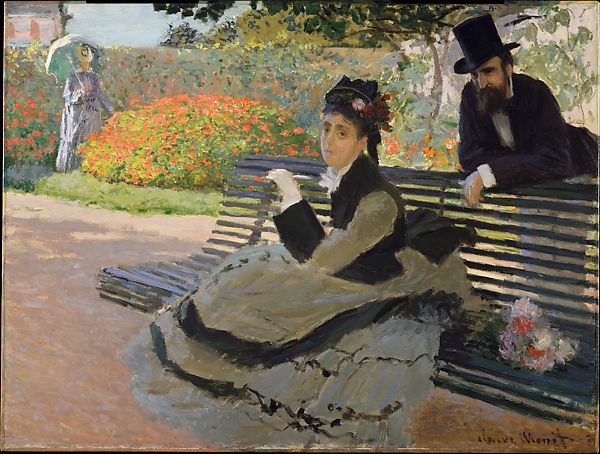

<head>
<meta charset="UTF-8" />
<meta name="keywords" content="drawing, painting" />
<meta name="description" content="drawings by Sunjy" />
<title>Sunjy</title>
<link rel="shortcut icon" type="image/x-icon" href="../../mImages/mCommon/favicon.ico" media="screen" />
<link rel="stylesheet" type="text/css" href="../../mCsses/mCommon/mCssA.css" />
<link rel="stylesheet" type="text/css" href="../../mCsses/mCommon/mCssB.css" />
<link rel="stylesheet" type="text/css" href="../../mCsses/mCommon/mCssC.css" />
<link rel="stylesheet" type="text/css" href="../../mCsses/mCommon/mCssD.css" />
<link rel="stylesheet" type="text/css" href="../../mCsses/mContent/mCssA.css" />
<link rel="stylesheet" type="text/css" href="../../mCsses/mContent/mCssB.css" />
<link rel="stylesheet" type="text/css" href="../../mCsses/mContent/mCssC.css" />
<link rel="stylesheet" type="text/css" href="../../mCsses/mContent/mCssD.css" />
</head>
<script type="text/javascript" src="../../mScripts/mContent/mContentAA.js" /></script>
<script type="text/javascript" src="../../mScripts/mContent/mContentAB.js" /></script>
<script type="text/javascript" src="../../mScripts/mContent/mContentAC.js" /></script>
<script type="text/javascript" src="../../mScripts/mContent/mContentAD.js" /></script>
<script type="text/javascript"></script> 
<script type="text/javascript">
document.write('<div class="mImgAbsolute"></div>');
/*
document.write('<p class="mFontSizeBColor" />From a white paper...</p>');
document.write('<table class="center"><tr><td>');
document.write('');
document.write('</td></tr></table>');
*/
</script>


<script type="text/javascript">
document.write('<p class="mFontSizeBColor" />Camille Monet on a Garden Bench</p>');
document.write('<p class="mFontSizeSColor" />By Claude Monet, 1873. Monet’s wife, Camille Doncieux, is as easily identifiable here as the mounds of geraniums in the garden of the couple’s house at Argenteuil. The same is true of her smart ensemble: the velvet and damask outfit closely resembles the look for spring 1873, as advertised in the March issue of the fashion periodical <i>La Mode Illustré</i>. Less clear is the nature of this enigmatic scene. Painted the year Camille’s father died, she telegraphs sadness while holding a note in her gloved hand. The tophatted gentleman, later identified as a neighbor, has perhaps called to offer his condolences and a consoling bouquet.</p>');
document.write('<table class="center" /><tr><td>');
document.write('La Mode Illustré</i>. Less clear is the nature of this enigmatic scene. Painted the year Camille’s father died, she telegraphs sadness while holding a note in her gloved hand. The tophatted gentleman, later identified as a neighbor, has perhaps called to offer his condolences and a consoling bouquet." />');
document.write('</td></tr></table>');
</script>


